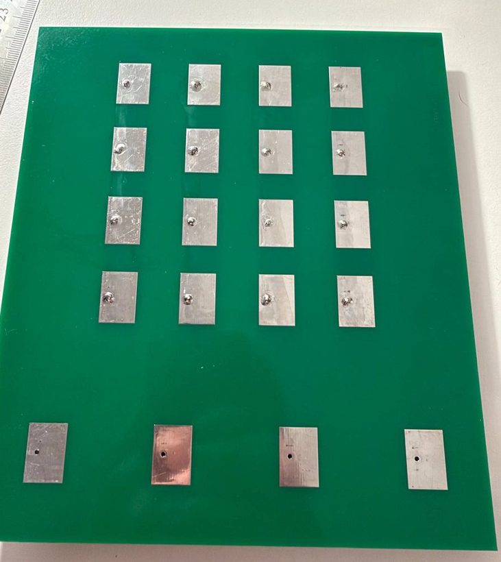
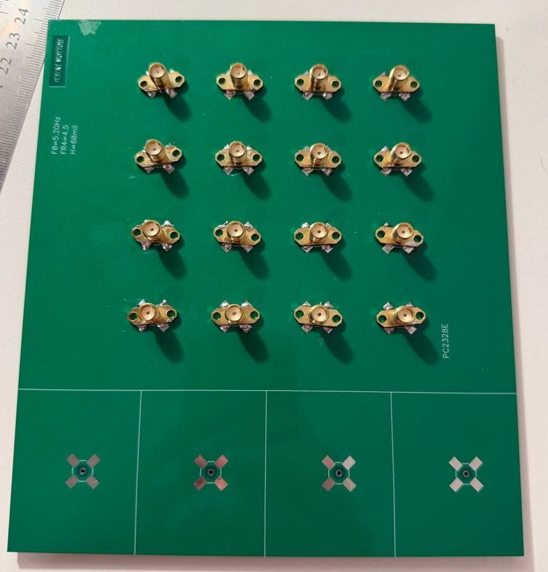
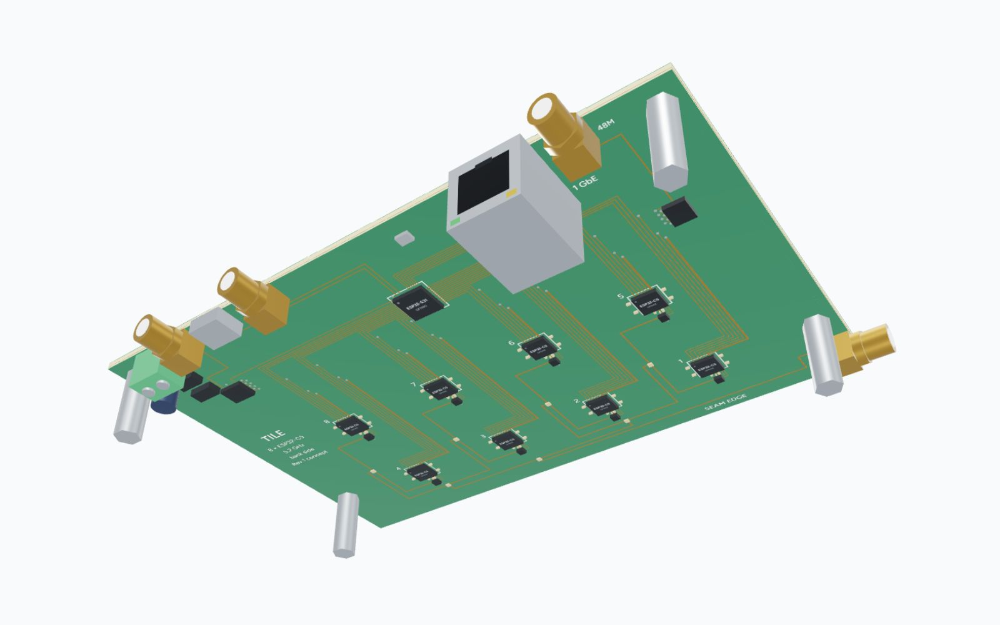

ESP32-C5 Phased Array
A low-cost 16-element 5.2 GHz digital phased-array research platform built from ESP32-C5 radios, inspired by ESPARGOS and ESP-SDR. The hard problems are synchronization, calibration and getting raw IQ out of the C5 — not the beamforming maths.
Sections
- What we are building
- What already exists, and what is new
- Why the ESP32-C5
- Four synchronization domains
- Sharing one 48 MHz reference
- The 5.2 GHz calibration network and loop
- Sixteen receivers create a data problem
- Two 8-element tiles and one timing board
- Eight 2-bit streams on one 16-bit bus
- Two data modes
- Data-rate budget, stage by stage
- Plan B: a small FPGA between the C5s and the S31
- Tile PCB: geometry, seam and antenna substrate
- The tile in 3D
- Power, heat and cost
- First useful experiment: receive beamforming
- Radar and communications experiments
- Transmit: what we know, and why steering is the easy part
- Critical bench experiments
- Development sequence
- Main technical risks
- What we know, infer and must test
- Alternatives we considered
- What a successful project looks like
- References
What we are building
A 16-element digital array at 5.2 GHz in which every element is a complete ESP32-C5 transceiver, arranged as two 8-element tiles. Each C5 sends its IQ over a 2-bit PARLIO lane into one ESP32-S31 per tile, which forwards 640 Mbit/s over one Gigabit port. Receive beamforming, AoA, Wi-Fi sensing, channel sounding and radar-like experiments come first; coherent transmission stays a research question.
Geometry
| Quantity | Value |
|---|---|
| Wavelength at 5.2 GHz | 57.7 mm |
| Element pitch (λ/2) | 28.8 mm |
| Outer element centres | 86.5 mm |
| Half-power beamwidth, 4 elements | ≈ 25° |
| Tiles | 2 × (2 × 4), stacked to 4 × 4 |
What it is for
- confirmedReceive — digital beamforming, AoA / direction finding (shown by ESPARGOS at 2.4 GHz)
- inferenceSense — Wi-Fi sensing, passive and bistatic radar, Doppler
- inferenceSound — channel sounding, MIMO measurements, localization
- speculativeTransmit coherently — TX beamforming, if raw TX can be reproduced
Status is strict: confirmed means stated or shown in a primary source — here by ESPARGOS on ESP32 hardware at 2.4 GHz, not yet on the C5 at 5 GHz.
What already exists, and what is new
ESPARGOS (Univ. of Stuttgart)
- confirmedESPARGOS One: 8 ESP32-C61 sensors + a controller ESP32; 4 × 2 dual-polarized patches, 2.4 GHz
- confirmedshared 40 MHz clock + 2.4 GHz reference through a splitter and an RF switch at every sensor
- confirmedPLL phase changes after every reset and channel change, so calibration is repeated per configuration
- confirmedraw IQ (closed firmware): wired trigger, packet timestamps ≤ 37.5 ns apart, CW tone from the controller’s PLL
- confirmedup to 4 boards (32 elements) combined; clock + reference share one SMA cable in a star
ESP-SDR
- confirmedraw IQ from an undocumented modem sample-dump engine; 10 chips; open source since Sept 2026
- confirmedESP32-C5 receives at 5 GHz: a 5.5 GHz test tone, and a second C5 on channels 36/48 (5.17–5.25 GHz)
- confirmedC5: snapshots of ≤ 16,380 samples at up to 80 MS/s, 10-bit I/Q, sent over USB or UART
- confirmedsoftware trigger only; no timestamps, no multi-device synchronization
- confirmedreceive-only; ESP-SDR's CPU spectrum mode on the C5 returns power, not complex bins
What this project adds
- inferencethe ESPARGOS synchronization principle at 5.2 GHz with a 48 MHz reference
- openone external 48 MHz clock driving 16 chip-down ESP32-C5s; C5 LO-phase behaviour
- openhardware trigger and capture alignment for C5 snapshots
- openIQ export over 2-bit PARLIO into one ESP32-S31 per tile, then 1 GbE
- inferencein-band 5.2 GHz calibration network; two 8-element tiles with a master timing board
Why the ESP32-C5
| Chip | Wi-Fi | 5 GHz | Main crystal | Relevance here |
|---|---|---|---|---|
| ESP32-C5 | Wi-Fi 6, 2412–2484 + 5180–5885 MHz | yes | 48 MHz | only 5 GHz part; separate ANT_5G pin; ESP-SDR snapshot IQ |
| ESP32 | Wi-Fi 4, 2.4 GHz | no | 40 MHz | 2.4 GHz only |
| ESP32-S2 / S3 | Wi-Fi 4, 2.4 GHz | no | 40 MHz | 2.4 GHz only |
| ESP32-C2 / C3 | Wi-Fi 4, 2.4 GHz | no | 26 or 40 / 40 MHz | 2.4 GHz only |
| ESP32-C6 / C61 | Wi-Fi 6, 2.4 GHz | no | 40 MHz | C61 is the sensor in ESPARGOS One |
| ESP32-H2 | none (BLE, 802.15.4) | no | 32 MHz | no Wi-Fi; ESP-SDR still receives |
| ESP32-S31 | Wi-Fi 6, 2.4 GHz | no | 40 MHz | continuous IQ streaming in ESP-SDR (experimental), 2.4 GHz only |
Only the ESP32-C5 reaches 5.2 GHz natively. ESP-SDR receives on all ten parts, but every other chip would need an external mixer and LO per element to reach 5.2 GHz — which defeats the point of a low-cost array. The price: the C5 has no continuous IQ path today.


Four synchronization domains
| Domain | Signal and path | Guarantees | Does not guarantee |
|---|---|---|---|
| RF reference | 48 MHz TCXO → fan-out → 16 × XTAL_P | one frequency for all LOs | LO phase after each lock |
| Data transport | 40 MHz PCLK → fan-out → 16 C5 + 2 S31 | lane-to-lane cycle alignment | which sample a lane starts with |
| Capture trigger | master GO → S31 → PCLK enable (+ READY) | common start within a tile | tile-to-tile start (two S31s) |
| RF calibration | 5.2 GHz tone → 1:2 → 1:8 → SPDT | measures φₖ, τₖ and path mismatch | anything before the switch |
| Ethernet / PTP | S31 EMAC, 1588 timestamps | logging, tile coordination | sample or phase alignment |
Wideband correction per element is a phase plus a delay: Cₖ(f) = exp[−j(φₖ + 2πfτₖ)], applied per FFT bin before the channels are combined.
What each domain fixes
| Error term | Cause | Shared clock | Calibration tone | Common trigger |
|---|---|---|---|---|
| Carrier frequency offset | independent crystals | removes | — | — |
| LO phase offset | each PLL locks with an arbitrary phase | — | removes | — |
| Sampling-time offset | independent sample clocks and starts | partly | removes (swept tone) | partly |
| Capture start misalignment | firmware / interrupt latency | — | partly | removes in a tile |
| Fixed path mismatch | cables, traces, switches | — | after the switch | — |
| Gain mismatch | AGC state, LNA spread | — | if gain is fixed | — |
Sharing one 48 MHz reference
| Topic | What we know |
|---|---|
| Frequency | All 16 LOs derive from one oscillator, so carrier offsets between elements vanish. The absolute ppm error is common to all and harmless. |
| Static skew | Buffer skew becomes a fixed LO phase: 50 ps ≈ 94° at 5.2 GHz. Calibration removes it — but skew drifting with temperature shows up as phase drift. |
| Jitter | In-band reference noise rises by 20·log(5200/48) = 40.7 dB. Jitter common to all elements cancels in relative phase; buffer additive jitter (20–160 fs max ≈ 0.04–0.3°) does not. |
| Injection | The C5 design guidelines cover only a 48 MHz ±10 ppm crystal, with no external-oscillator requirements (the datasheet calls XTAL_P/N a crystal or oscillator input). Precedents: the ESP32-S2 guide (oscillator into XTAL_P via ~50 pF), ESPARGOS (40 MHz shared), Espressif’s esp-crab (two C5s, “co-crystal”). C5 modules carry their own crystal. |
| At 5.2 GHz | Value |
|---|---|
| N = 5200 / 48 | ≈ 108 (+40.7 dB) |
| 1 ps rms jitter | 1.87° rms |
| 50 ps static skew | 94° (calibrated) |
| 108 × 48 MHz | 5184 MHz — in band |
open Driving XTAL_P of 16 chip-down C5s from one buffered TCXO is the first clock bench test. Static buffer skew becomes static LO phase and is calibrated out; the 108th harmonic of 48 MHz falls at 5184 MHz, and the 130th of the 40 MHz PARLIO clock at exactly 5200 MHz: series-terminate and slew-limit both clocks, keep their last few cm on L4 short and away from the RF lines, and pick channels off 5184 and 5200 MHz if spurs show.
The 5.2 GHz calibration network and loop
- Lock and fix gain: tune all C5s, disable AGC, set one manual gain index.
- Measure the reference: all SPDTs to CAL; step the tone across the capture band (as ESPARGOS One does), one synchronized snapshot per step.
- Estimate per element, relative to element 1: gain gₖ and phase φₖ, and delay τₖ from the phase slope across the tone steps.
- Measure the scene: all SPDTs to ANT, synchronized snapshots (source muted).
- Correct per FFT bin with Cₖ(f) = exp[−j(φₖ + 2πfτₖ)] / gₖ, then combine.
Repeat after every reset, retune or sample-rate change — ESPARGOS treats a calibration as valid for one capture epoch. The tone cannot see anything before the switch. On the tile that is the patch, its probe via and a 1 mm line, the same for all eight elements: calibrate it once over the air with a far-field source. Tile B is turned 180°, so its elements carry a fixed 180° term. The over-the-air step also absorbs the tone's own distribution (1:2 splitter, the two cables, each 1:8 tree), so repeat it whenever a calibration cable is moved or re-coiled. With the separate aperture board the pre-switch part is the cable, measured once with a VNA.
Sixteen receivers create a data problem
- The C5 samples at up to 80 MS/s internally, but ESP-SDR moves captures out over USB (12 Mbit/s) or UART.
- A 2-bit PARLIO lane at 40 MHz gives each C5 80 Mbit/s: enough for ~4 MS/s continuous, or for draining full-rate snapshots in a few milliseconds.
- Eight lanes fill one 16-bit S31 bus (640 Mbit/s) and one Gigabit port per tile — a rate ESP-SDR already pushes through an S31 (≈ 687 Mbit/s on the wire). Continuous raw 80 MS/s from 16 elements stays out of scope.
Two 8-element tiles and one timing board
A master timing / RF board provides the 48 MHz reference, the 40 MHz PARLIO clock, the trigger and the calibration tone. Each tile is 8 chip-down C5s, one ESP32-S31 and one Gigabit PHY; Ethernet and PTP only carry data, control and timestamps — never sample alignment.
- Chip-down C5 (QFN48): modules carry their own 48 MHz crystal and cannot share a reference.
- PHY: RTL8211F is the team's choice; Espressif's S31 board uses a YT8531 — check the ESP-IDF driver before layout.
- The S31 forwards 16-bit words untouched; bit de-interleaving runs on the host.
- Ethernet and PTP give timestamps and coordination only — sample alignment comes from the shared PCLK, the GO signal and the RF calibration.
Eight 2-bit streams on one 16-bit bus
Start sequence
- the S31 arms all C5s; each captures a snapshot and loads its PARLIO DMA descriptors
- each C5 raises READY
- the S31 waits until all eight READY lines are high
- GO: the S31 enables the PCLK buffer, so all lanes start on one edge
- all C5s shift out on the same clock edges
- the S31 captures 16-bit words by DMA
- every frame starts with a sync word common to all lanes
Per-lane frame
| Field | bits | Purpose |
|---|---|---|
| sync word | 32 | identical on all lanes → alignment check |
| channel ID | 8 | which C5 / antenna |
| frame sequence | 16 | detects lost frames |
| sample counter | 32 | ties the frame to the capture start |
| capture metadata | 32 | rate, gain index, ANT / CAL state |
| payload | N × 16 | IQ8 (or packed IQ10) |
| CRC | 16 | bit errors on the parallel bus |
If one lane slips by a clock, the sync word no longer lines up across the 16 bits and the S31 sees it at once. Bit transposition is cheap on a PC and expensive on the S31 at 40 M words/s.
C5 TRM v1.1 §43: PARLIO ≤ 40 MHz, external TX clock, not an ETM peripheral; a gated external clock may start after TX_START. Lockstep across chips is an inference to test.
Two data modes
open Mode 1 — continuous reduced rate
Every C5 streams a narrow band continuously over its own 2-bit lane.
| Quantity | Value |
|---|---|
| Sample rate (nearest ESP-SDR rate) | 4 MS/s, IQ8 |
| Per element | 64 of 80 Mbit/s |
| Per tile / array | 512 Mbit/s / 1.02 Gbit/s |
| Instantaneous bandwidth | ≈ 4 MHz |
| Doppler at 5.2 GHz | 34.7 Hz per m/s |
- 5 MS/s is not an ESP-SDR rate, and 8 MS/s (128 Mbit/s) does not fit a 2-bit lane.
- The C5 has no continuous capture today. Back-to-back 4 MS/s snapshots (4.1 ms each, 3.3 ms to drain) would be near-continuous if capture and transfer can overlap.
- The C5 analog filter is at least 11 MHz wide: at 4 MS/s out-of-band signals may alias (the S31 stream subsamples without a decimation filter).
- On the S31, ESP-SDR streams by routing the modem debug bus into PARLIO. The C5 lists MODEM_DIAG0–31 signals, but IQ on them is undocumented — and 16–20 lanes per C5 would not fit the shared bus.
inference Mode 2 — full-rate synchronized snapshots
All 16 elements capture the same 205 µs at 80 MS/s, then drain over their lanes.
| Quantity | Value |
|---|---|
| Snapshot | 16,380 samples, 205 µs |
| Size per element, IQ8 / IQ10 | 32.8 / 41.0 kB |
| Drain time at 80 Mbit/s | 3.3 / 4.1 ms |
| Max snapshot rate (IQ8) | ≈ 287 per second |
| Array data per snapshot | 524 kB |
- Wide instantaneous bandwidth (11–48 MHz analog) with low-cost networking.
- Right mode for calibration, wideband channel sounding and radar trials.
- Needs PARLIO export firmware and a hardware capture trigger — both new work.
Data-rate budget, stage by stage
| Stage | per element | per tile (×8) | array (×16) | comment |
|---|---|---|---|---|
| Internal IQ, 80 MS/s, IQ8 | 1.28 Gbit/s | 10.2 Gbit/s | 20.5 Gbit/s | inside the chip only |
| Snapshot, 16,380 samples (IQ8) | 32 KiB | 256 KiB | 512 KiB | 205 µs of signal |
| Today: USB-Serial-JTAG | 12 Mbit/s | — | — | ESP-SDR, line rate |
| PARLIO lane, 2 bit × 40 MHz | 80 Mbit/s | 640 Mbit/s | 1.28 Gbit/s | 64 % of GbE per tile |
| Mode 1: 4 MS/s IQ8 continuous | 64 Mbit/s | 512 Mbit/s | 1.02 Gbit/s | C5 continuous capture is open |
| Mode 2: snapshot drain (IQ8) | 3.3 ms | same, parallel | same, parallel | ≤ 287 snapshots/s |
| 64 FFT bins per snapshot, 100/s | 205 kbit/s | 1.64 Mbit/s | 3.28 Mbit/s | complex, 16-bit I/Q |
| 16 × 16 covariance, 100/s | — | — | 870 kbit/s | 136 complex float32 |
Per tile the lanes add up to 640 Mbit/s and one Gigabit port; the array needs two ports at the host. Reduction (FFT bins, covariance) can move to the S31 or an FPGA later.
Assumptions: IQ8, 16,380-sample snapshots (ESP-SDR maximum on C5), 2 bit × 40 MHz per lane. Replace with step-1/2 measurements.
Plan B: a small FPGA between the C5s and the S31
Switch to Plan B if
- eight C5 lanes cannot be kept in lockstep
- the S31 cannot sustain 640 Mbit/s in and out
- real-time per-element processing (FFT, decimation) is needed
What the FPGA does
- 8 independent PARLIO receivers
- elastic FIFO per channel
- frame alignment, timestamps
- trigger and switch sequencing
- calibration correction
- decimation / FFT
- later: beamforming
Cost and benefit
- one more chip, toolchain and HDL work
- more power and board area
- the team needs FPGA experience
- each C5 can run on its own lane clock
- deterministic, inspectable timing
- data reduction before Ethernet
- a path to real-time beamforming
Candidate FPGAs: Lattice ECP5 / iCE40 UltraPlus (open toolchain), Efinix Trion. Optional for Rev 1.
Tile PCB: geometry, seam and antenna substrate
Rev 1 stack-up (custom 4-layer)
| Layer | Use |
|---|---|
| L1 | patches only (the front) |
| L2 | solid ground (patch ground) |
| L3 | ground; clock lines, 3.3 V spine |
| L4 | all parts, RF, data lines |
Fab cost (team estimate)
| Item | ≈ USD |
|---|---|
| standard 4-layer, 5 boards | $25–35 |
| + ENIG, impedance control | $35–55 |
| Rev 1 custom stack + blind vias | quote |
| per tile (standard, 5 boards) | $7–11 |
| 6-layer, per board | $10–16 |
| shipping to Israel | $20–35 |
The patch substrate
- A standard 1.6 mm 4-layer board has only ≈ 0.21 mm between L1 and L2: a 5.2 GHz patch there radiates at most ≈ 18 % of its power on FR-4 (lossless bandwidth ≈ 0.3 %; the loss makes the S11 dip look wider than it is).
- Rev 1 uses a custom stack with a 1.065 mm core under L1: ≈ 1.6 % (≈ 85 MHz) lossless bandwidth and at most ≈ 53 % efficiency; patch ≈ 17.5 × 13.5 mm, trimmed after a test coupon (≈ 55 MHz per 0.1 of εr).
- Front: patches only (plus tented through-via pads). Each C5 sits behind its own patch: probe via, 1 mm to the SPDT, 2.5 mm to the C5, the same for all eight. All digital lines run behind the L2 ground.
- Seam: the ground is cut between tiles, so bridge it continuously and calibrate per element. Tile B is turned 180°, so elements 9–16 carry a fixed 180° term.
To scale for 28.8 mm pitch. Custom 4-layer stack (JLCPCB's standard one has only 0.21 mm under L1). Patch: εr 4.4, tan δ 0.02; lossless BW ≈ 3.77·(εr−1)/εr²·(W/L)·(h/λ₀); efficiency counts dielectric loss only. Prices: team estimates.
The tile in 3D
An interactive model of one 150 × 100 mm tile, drawn from the numbers on this page. The front carries only the eight patches. Each ESP32-C5 sits on the back under its own patch, with its RF switch between the probe via and the chip, so every element has the same 3.5 mm RF path; all digital lines run behind the L2 ground. The board stands on 16 mm standoffs. It is a Rev 1 concept that shows scale and placement, not a PCB layout. Exploded lifts the layers apart and makes the dielectric see-through. Array adds the second tile, turned 180° so both antenna blocks meet at the seam, and the master board with its cables.

Interactive 3D model of one tile. It needs JavaScript; the drawings above show the same board.
Drag to turn, Shift-drag or right-drag to pan, Ctrl + scroll to zoom, double-click to reset. Hover a part for its name; click a part, a number or a name in the list to highlight it. With the view focused, the arrow keys turn it, Shift + arrows pan, + and − zoom and 0 resets.
- : the only parts on the front: 2 × 4 patches, ≈ 17.5 × 13.5 mm, at 28.8 mm pitch, each probe-fed by a through via. Clock and 3.3 V drops are blind L4–L3 vias, so no signal reaches the front; ground-stitching vias show only as tented pads.
- : SKY13351-class SPDT, 1 mm from the probe via, set by two control lines from its C5: the C5 sees its patch, or the calibration tone.
- : each under its own patch (it overhangs the outline by ≈ 1.5 mm), 2.5 mm from its switch with a series 0201 in line, so all eight RF paths are 3.5 mm and identical. Chip-down QFN48, so XTAL_P can take the shared 48 MHz.
- : per C5: PARLIO (2 bits at 40 MHz), READY / control, 48 MHz, PCLK and 3.3 V, on the back, down to the S31, the clock via rows and the 3.3 V spine.
- : 16-bit PARLIO receive, DMA and the Gigabit MAC (QFN80, 8 × 8 mm). It enables the PCLK buffer, so every lane starts on the same edge.
- : RTL8211F-class over RGMII and a MagJack: 640 Mbit/s of IQ out.
- : 1:8 for the 5.2 GHz tone, from the side SMA along the seam side and down beside each column, over solid L3 ground; every branch is 90.6 mm. The splits are drawn as junctions; each is a compact Wilkinson (λ/4 arms and a 100 Ω resistor).
- : 48 MHz 1:8 and 40 MHz 1:10 (9 used): one point-to-point line per C5 and one to the S31, on L3 from the buffers, the last few cm to each C5 on L4.
- : right-angle, on the back: 48 MHz, PCLK and trigger (the master GO) on the connector edge, the calibration tone on the side edge.
- : the boards butt together, so the rows stay 28.8 mm apart across it (Seam view). In the array a continuous ground joint, stitched every 3 mm, bridges the cut. Tile B is turned 180°, so its elements carry a fixed 180° term.
- : 48 MHz TCXO, 40 MHz PCLK, trigger and the 5.2 GHz source, split 1:2 to the tiles over a phase-matched pair of calibration cables; tile A's runs out and back under its board to match tile B's (Array).
Power, heat and cost
3.3 V supply estimate
| Load | per unit | count | total |
|---|---|---|---|
| ESP32-C5, receive (5 GHz) | 110 mA | 16 | 1.76 A |
| ESP32-C5, transmit peak (5 GHz) | 408 mA | 16 | 6.53 A |
| ESP32-S31 + RTL8211F (estimate) | ≈ 400 mA | 2 | 0.80 A |
| Clock buffers, oscillators, SPDTs | ≈ 40 mA | 6 | 0.24 A |
| Master board incl. synthesizer | ≈ 200 mA | 1 | 0.20 A |
| All receiving | 3.0 A · 10 W | ||
| All transmitting (worst case) | 7.8 A · 26 W |
- Espressif asks for ≥ 0.6 A of supply capability per C5: 4.8 A per tile. Plus 10 µF on each VDDA rail.
- TX bursts droop a shared rail and can disturb the reference — give clock buffers and oscillators their own quiet LDO.
- Heat: ≈ 10 W in receive over two tiles is easy; continuous all-TX (26 W) needs airflow.
One tile (electronics)
| Item | ≈ USD |
|---|---|
| 8 × ESP32-C5 (chip-down needed for a shared reference) | 40 |
| 1 × ESP32-S31 | 7.5 |
| 1 × RTL8211F Gigabit PHY | 1.4 |
| Gigabit MagJack | 2.5 |
| 48 / 40 MHz fan-out buffers | 6 |
| 40 MHz oscillator | 1.5 |
| 8 × RF SPDT (SKY13351-class) | 5 |
| 3.3 V regulation, power | 3 |
| Ethernet crystal, passives, misc. | 3–5 |
| Tile electronics | 70–80 |
Full system
| Item | ≈ USD |
|---|---|
| Two tiles | 140–160 |
| Master board: 48 MHz, trigger, 5.2 GHz source, splitters | 15–20 |
| Electronics total | 160–180 |
| PCBs, assembly, shipping | 60–120 |
| Complete prototype target | 220–300 |
- Chip-down C5s replace modules because modules carry their own crystal; parts cost is similar, layout work is higher.
- The custom stack-up (with blind L4–L3 vias) keeps the patches on the tile but needs a quote: the PCB line assumes standard-stack prices. Ask for a balanced build and a bow/twist limit. A separate antenna board would add a second fab order and 16 RF connections.
- A MAX2871 evaluation board alone costs more than the $15–20 line; a bare synthesizer on the master board is assumed.
- For scale: an ESPARGOS One Core Kit (8 elements, 2.4 GHz, finished product with enclosure, PoE and firmware) is €350 excl. VAT.
Team low-volume estimates (Oct 2026), not quotes. Excludes lab instruments, enclosure and engineering time.
First useful experiment: receive beamforming
Receive steering is purely digital: rotate each element's IQ by φₖ and sum. With λ/2 spacing the phase step between neighbours is Δφ = −π·sin θ. Move the slider to steer one 4-element row.
Experiment
- Place a 5.2 GHz CW or Wi-Fi source in the far field (2D²/λ ≈ 0.9 m for the 163 mm aperture diagonal; use ≥ 1 m).
- Calibrate with the internal tone, then capture snapshots with the source at known angles.
- Form beams digitally: y = wᴴx with w = steering vector; scan azimuth and elevation.
- Estimate angle with conventional beamforming and MUSIC; add a second source for nulling.
Success criterion
- The measured beam pattern matches the predicted one to within a few dB in the main lobe.
- The estimated angle repeats after a power cycle and retune — proving that calibration, not luck, produced coherence.
Radar and communications experiments
| Status | Experiment | What we would measure | Evidence and dependencies |
|---|---|---|---|
| confirmed | Wi-Fi sensing from CSI | motion, presence, gestures, breathing-scale phase | widely shown on ESP32; C5 CSI gives 52–242 subcarriers |
| inference | Passive radar / localization with AP illuminators | AoA, Doppler, multipath changes, position | ESPARGOS passive localization at 2.4 GHz; needs mode 1 or fast snapshots |
| inference | Separate TX and RX elements | 1–2 C5s transmit packets, 14–15 receive coherently | standard packet TX; ESPARGOS radar mode does one-TX / rest-RX |
| inference | Pulsed / switched (TDM) | transmit a burst, switch to RX, capture echoes | C5 is half-duplex; TX→RX switching time unknown |
| open | Active CW or stepped frequency | Doppler (CW), coarse range (stepping) | 5 GHz tone from a C5 undocumented |
| speculative | FMCW-like on the same radio | range–Doppler maps | needs simultaneous TX + RX and arbitrary TX — not the starting point |
- Doppler at 5.2 GHz is 34.7 Hz per m/s; 0.5 m/s resolution (walking people) needs ≈ 60 ms of coherent slow time. Mode 1 at 4 MS/s or back-to-back snapshots make this possible; USB-only snapshots do not.
- Range resolution is c/2B: 7.5 m at 20 MHz, ≈ 3.1 m at the C5's 48 MHz analog limit. Angle and Doppler are the strengths.
Communications
| Status | Experiment | Content | Builds on |
|---|---|---|---|
| inference | Receive beamforming | steer a digital beam to a Wi-Fi station; measure SNR gain against one element | calibrated snapshots |
| inference | Interference nulling | two transmitters; place a null on one, keep the other | covariance estimation |
| inference | Wi-Fi angle of arrival | AoA of real stations from per-packet CSI — shown at 2.4 GHz by ESPARGOS | CSI mode + calibration |
| inference | MIMO channel measurements | 16-element channel matrices, multipath, angle–delay profiles | CSI or raw snapshots |
| inference | Localization and beam tracking | follow a moving station; compare with ground truth | repeated snapshots / CSI |
| open | Distributed coherent TX | beam-steered transmission from several C5s | TX phase control (open) |
Transmit: what we know, and why steering is the easy part
| Status | Capability | Evidence / comment |
|---|---|---|
| confirmed | Standard Wi-Fi packet TX at 5 GHz on every C5 | datasheet: 18 dBm typ. at low rates (chip level) |
| confirmed | One element transmits, the others receive (TDM) | ESPARGOS One radar mode does this at 2.4 GHz |
| inference | All TX carriers on the same frequency | follows from the shared 48 MHz reference |
| open | Known, repeatable TX LO phase after each PLL lock | unknown; RX calibration does not measure the TX path |
| open | Simultaneous TX start on 16 chips | packet TX timing belongs to the Wi-Fi MAC, not to us |
| open | CW tone at 5 GHz on the C5 | cert-test API esp_phy_wifi_tx_tone() is documented for channels 1–14 only |
| open | Arbitrary IQ playback on the C5 | ESP-SDR is receive-only; its authors say arbitrary TX works but are not releasing it (misuse and certification concerns) |
| speculative | 16-element coherent transmit beamforming | needs all of the above plus over-the-air TX calibration |
Phase step at λ/2
| steering angle θ | Δφ per element |
|---|---|
| 0° | 0° |
| 15° | −46.6° |
| 30° | −90.0° |
| 45° | −127.3° |
| 60° | −155.9° |
What is actually hard
- Phase-coherent TX LOs: a shared 48 MHz fixes frequency, not the phase after each PLL lock.
- Deterministic TX start: normal packet TX is timed by the Wi-Fi MAC, not by us.
- A raw TX waveform path on the C5 — the ESP-SDR authors say arbitrary TX works but have not released it.
- The C5 is 1T1R and half-duplex: one chain switches between TX and RX.
Until then
- Separate roles: 1–2 C5s transmit, the other 14–15 receive coherently.
- TDM / MIMO: one element transmits at a time, the TX aperture is synthesized afterwards (as in ESPARGOS radar mode).
- External RF phase shifters after each C5 — more BOM, loss and control lines; not for Rev 1.
- Regulation: 5150–5250 MHz allows 200 mW EIRP, indoor, in both the EU and Israel, for EN 301 893 RLAN equipment. Sixteen coherent elements add up to 24 dB over one, and custom radar waveforms are probably not covered — do TX experiments cabled, shielded or at low power, on channels 36–48.
Critical bench experiments
| Status | Test | What it proves | Evidence today |
|---|---|---|---|
| open | C5 raw IQ → GDMA → PARLIO TX | a snapshot can leave the C5 without CPU copies | GDMA can address the ESP-SDR IQ bank; ESP-SDR packs IQ8 in place on the CPU; access while the modem owns the bank is unknown |
| open | 2 bit × 40 MHz from one C5 | 80 Mbit/s per element in practice | 40 MHz is PARLIO's maximum clock; receiver samples on the falling edge (≈ 12.5 ns window) |
| open | eight C5 PARLIO transmitters in lockstep | Rev 1 needs no FPGA | PARLIO has no ETM start; the reference manual's gated external clock suggests a clock-held start — untested |
| inference | 16-bit PARLIO RX at 40 MHz into the S31 | tile ingress | ESP-SDR S31: 16-lane PARLIO → GDMA ring at 40 MS/s, but fed internally with an internal sample clock — external pins + PCLK untested |
| confirmed | S31 → GbE at ≈ 640 Mbit/s | tile egress | ESP-SDR: raw UDP frames at ≈ 687 Mbit/s, 600 s, 0 samples lost (one board, experimental) |
| open | shared 48 MHz into C5 XTAL_P | frequency lock across elements | no C5 guidance; ESP32-S2 oscillator note, ESPARGOS at 40 MHz |
| open | RF phase repeatability: reset, retune, temperature | how often to calibrate | ESPARGOS: phase re-rolls at 2.4 GHz; C5 unmeasured |
| open | snapshot synchronization on a wideband signal | real phase, delay and jitter | ESPARGOS One: ≤ 37.5 ns timestamp scatter (2.4 GHz, closed firmware) |
Status = what is already stated or shown in a primary source, not on our hardware. Evidence: ESP-SDR source and docs, ESP32-C5 / S31 datasheets, ESPARGOS papers.
Development sequence
One C5
- run ESP-SDR
- characterise raw IQ
- inspect memory / DMA path
- implement PARLIO export
Done when a snapshot leaves over PARLIO, bit-exact
C5 + S31
- 2-bit PARLIO, shared 40 MHz
- ≈ 80 Mbit/s stream
- out over GbE
Done when 80 Mbit/s to the PC for hours, no loss
Two C5s
- common 48 MHz reference
- common trigger
- phase calibration
- first AoA
Done when relative phase stable to a few degrees
Eight C5s
- full tile
- 16-bit PARLIO, ≈ 640 Mbit/s
- receive beamforming
Done when 8 lanes aligned for hours; beam matches prediction
Second tile
- 16 elements
- common calibration
- 4 × 4 AoA and beamforming
Done when calibrated 2D scan, repeatable after power cycle
Extensions
- radar, Wi-Fi sensing
- coherent TX research
- digital TX beamforming
- FPGA preprocessing
Done when research results
Main technical risks
| Risk | Early test | Fallback |
|---|---|---|
| C5 raw IQ cannot reach PARLIO by DMA at the needed rate | step 1: snapshot → PARLIO, bit-exact | CPU copy at lower rate; snapshots only |
| Eight lanes not cycle-aligned (40 MHz is PARLIO's limit) | steps 2 and 4: sync-word checks, eye margin | Plan B: FPGA with per-lane FIFOs |
| S31 cannot ingest and send 640 Mbit/s at once | step 2 → 4: 80 → 640 Mbit/s | lower lane rate, or FPGA → GbE PHY |
| Shared 48 MHz gives poor phase stability | step 3: phase vs time and temperature | per-snapshot calibration |
| C5 LO phase not repeatable across resets / retunes | step 3: repeated resets and retunes | calibrate every epoch (as ESPARGOS) |
| Coherent TX method not reproducible on C5 | step 6, research only | RX-only results stand alone |
| FR-4 antenna / array consistency insufficient | VNA on the first tile | separate aperture board (ours) or better laminate |
| Power and heat with 16 active C5s | current and temperature on one tile | duty-cycle TX, airflow |
| No continuous capture on the C5 (mode 1) | step 1: back-to-back snapshot timing | mode 2 only; quasi-continuous snapshots |
| Custom stack: cost, warpage; patches lossy (≤ 53 %) | quote; simulate + VNA one tile | standard stack + our aperture board |
The first eight are the team's list; the last two came out of the research. Each except coherent TX (step 6) has a bench test in steps 1–4.
What we know, infer and must test
| Status | Claim | Basis |
|---|---|---|
| confirmed | ESP32-C5 receives 5180–5885 MHz; 1T1R; 18 dBm TX, −94 dBm sensitivity (low rates) | Espressif datasheet v1.5 |
| confirmed | ESP-SDR raw IQ on C5: 80/40/20/10/8/4 MS/s, ≤ 16,380 samples, USB / UART out | ESP-SDR source and README |
| confirmed | C5 PARLIO TX: 1/2/4/8 bit, ≤ 40 MHz, external clock pad, GDMA; not an ETM peripheral | C5 TRM v1.1, ESP-IDF source |
| confirmed | S31 streams 16-lane PARLIO capture to GbE at ≈ 687 Mbit/s (experimental) | ESP-SDR S31 docs; 600 s, 0 lost |
| confirmed | S31 EMAC: 10/100/1000, MII / RMII / RGMII, IEEE 1588 timestamps | S31 datasheet v0.5 (pre-release) |
| confirmed | ESP32-C5 modules integrate their own 48 MHz crystal | module datasheet v1.3 |
| confirmed | ESP32 PLL phase changes after reset and retune | ESPARGOS hardware paper |
| inference | 2-bit lanes from eight C5s can be packed into one 16-bit S31 bus | PARLIO widths and clocks |
| inference | A 2-bit lane carries 4 MS/s IQ8 continuously (64 of 80 Mbit/s) | arithmetic |
| open | C5 IQ buffer → GDMA → PARLIO without CPU copies | untested |
| open | Eight C5 PARLIO transmitters stay in lockstep | untested |
| open | XTAL_P can be driven cleanly from a shared 48 MHz buffer | not documented for C5 |
| open | Continuous IQ capture on the C5 | no C5 continuous mode today |
| open | Coherent TX on C5 | ESPARGOS: works on ESPARGOS One, unpublished |
| speculative | 16-element coherent TX beamforming | no evidence yet |
The full evidence register — every researched claim with its status and source — is on a separate page.
Alternatives we considered
| Alternative | Why not for Rev 1 | Reconsider when |
|---|---|---|
| W5500 SPI-Ethernet per C5 | C5 has no MAC; adds 8 bridges, PHYs, magnetics and a switch; 100 Mbit ceiling per element | single-node experiments, elements on separate boards |
| Ethernet switch per tile (BCM53202M: 8 × 10/100 + 2 × GbE) | needs Ethernet on every C5 first; solves aggregation, not sample synchronization | elements become separate networked boards |
| ESP32-S31 as the RF element (2.4 GHz) | continuous IQ works today, but 2.4 GHz only: new aperture, crowded band | if C5 PARLIO export fails |
| 4 × 2×2 tiles, one FPGA each | more boards, FPGA mandatory, four uplinks | Plan B, or more processing per tile |
| Analog phase shifter per element | receive steering is exact and wideband in software | deterministic TX steering before raw TX exists |
| Buy 2 × ESPARGOS One (2.4 GHz) | closed IQ firmware, 2.4 GHz, not our design | as a reference instrument and baseline |
Design-decision record. BCM53202M product brief (Broadcom 53202M-PB00-R): 8 × 10/100 PHYs, two GMII/RGMII/TBI ports, 384 KB buffer.
What a successful project looks like
Minimum
a solid result even if the tile PCB is late
- C5 raw IQ exported over PARLIO, measured
- C5 + S31 streaming to a PC over GbE
- two C5s on one reference, phase-calibrated
- open-source code + measurement report
Target
the proposal as planned
- one 8-element tile at 640 Mbit/s
- two tiles: calibrated 4 × 4 beamforming and AoA
- both data modes working
- a published dataset of synchronized captures
Stretch
only after the target is met
- Doppler / passive radar demo
- separate-TX bistatic experiments
- first coherent-TX experiments
- FPGA or S31 preprocessing
References
- F. Euchner, T. Schneider, M. Gauger, S. ten Brink, “ESPARGOS: An ultra low-cost, realtime-capable multi-antenna WiFi channel sounder,” WSA & SCC 2023. arxiv.org/abs/2502.09405
- F. Euchner, S. ten Brink, “ESPARGOS: Phase-coherent WiFi CSI datasets for wireless sensing research,” 2024. arxiv.org/abs/2408.16377
- F. Euchner, D. Kellner, P. Stephan, S. ten Brink, “Passive channel charting: Locating passive targets using Wi-Fi CSI,” 2025. arxiv.org/abs/2504.09924
- ESPARGOS One datasheet and Quick Start Manual Rev 1.0, June 2026. espargos.net/espargos-one/
- ESPARGOS documentation: phase-coherent multi-array systems; IQ sampling. espargos.net/docs/combined-arrays.html
- pyespargos library (LGPL-3.0): iq_sync, iq_pool, iq_tone, csi_calibration. github.com/ESPARGOS/pyespargos
- ESP-SDR: raw IQ capture with Espressif’s ESP32 chips (project page). espargos.net/espsdr/
- ESPARGOS/esp-sdr (GPL-3.0), HEAD e74f2a4, 8 Oct 2026: README, targets/esp32c5/chip.h, docs/rx-controls.md, issues #3 #5, PRs #6 #9. github.com/ESPARGOS/esp-sdr
- Espressif, ESP32-C5 Series Datasheet v1.5, Sept 2026. espressif.com/sites/default/files/documentation/esp32-c5_datasheet_en.pdf
- Espressif, ESP32-C5 Hardware Design Guidelines: schematic checklist, PCB layout. docs.espressif.com/projects/esp-hardware-design-guidelines/en/latest/esp32c5/
- Espressif, ESP32-C5-WROOM-1/1U Datasheet v1.3; ESP32-S31 Datasheet v0.5 (pre-release). espressif.com/en/support/documents/technical-documents
- Espressif, ESP32-S2 Hardware Design Guidelines — oscillator input on XTAL_P. docs.espressif.com/projects/esp-hardware-design-guidelines/en/latest/esp32s2/
- Espressif, ESP-Hosted-MCU performance (C5 SDIO throughput). github.com/espressif/esp-hosted-mcu/blob/main/docs/design/performance.md
- Espressif, ESP32-C5 Technical Reference Manual v1.1 — Parallel IO (ch. 43), GDMA, ETM. documentation.espressif.com/esp32-c5_technical_reference_manual_en.pdf
- Espressif, ESP32-S31 Series Datasheet v0.5 (pre-release), 2026 — PARLIO, Gigabit EMAC with IEEE 1588. documentation.espressif.com/esp32-s31_datasheet_en.html
- ESP-SDR, ESP32-S31 streaming notes and test reports (16-lane PARLIO, ESR2 over GbE). github.com/ESPARGOS/esp-sdr/blob/main/docs/s31-streaming.md
- Espressif, ESP-IDF Parallel IO (PARLIO) TX driver, ESP32-C5. docs.espressif.com/projects/esp-idf/en/latest/esp32c5/api-reference/peripherals/parlio/parlio_tx.html
- Analog Devices, MAX2871 23.5–6000 MHz synthesizer with integrated VCO, datasheet. analog.com/en/products/max2871.html
- Skyworks, SKY13351-378LF 0.02–6 GHz SPDT switch, datasheet. skyworksinc.com
- Broadcom, BCM53202M product brief (53202M-PB00-R). docs.broadcom.com/doc/53202M-PB00-R
- Realtek, RTL8211F(I)-CG integrated 10/100/1000 Ethernet transceiver, datasheet. realtek.com
- Espressif, esp-csi and the esp-crab two-ESP32-C5 example. github.com/espressif/esp-csi/tree/master/examples/esp-crab
- Espressif, ESP-IDF: ESP32-C5 Wi-Fi CSI; esp_phy_cert_test.h (TX tone API). docs.espressif.com/projects/esp-idf/en/latest/esp32c5/
- C. Barrett (ed.), “Fractional/Integer-N PLL basics,” Texas Instruments SWRA029, 1999. ti.com/lit/an/swra029/swra029.pdf
- Datasheets: TI LMK1C1104 (SNAS791D), Epson TG2016SMN, SiTime SiT5356. ti.com/lit/ds/symlink/lmk1c1104.pdf
- K. Chetty, G. E. Smith, K. Woodbridge, “Through-the-wall sensing of personnel using passive bistatic WiFi radar at standoff distances,” IEEE TGRS 50(4), 2012. doi.org/10.1109/TGRS.2011.2164411
- F. Colone, K. Woodbridge, H. Guo, D. Mason, C. J. Baker, “Ambiguity function analysis of wireless LAN transmissions for passive radar,” IEEE TAES 47(1), 2011. doi.org/10.1109/TAES.2011.5705673
- H. C. Yildirim et al., “High resolution 802.11ax-based passive radar for human movement monitoring,” EuRAD 2020 (held January 2021). research.dial.uclouvain.be/handle/2078.5/218703
- S. M. Hernandez, E. Bulut, “Lightweight and standalone IoT based WiFi sensing for active repositioning and mobility,” WoWMoM 2020 (ESP32 CSI Tool). github.com/StevenMHernandez/ESP32-CSI-Tool
- CEPT ECC/DEC/(04)08 (amended 2021); Israel Wireless Telegraphy (Conformity Approvals) Regulations 2021. docdb.cept.org/download/3450
- h0m3us3r, eSpDR — ESP32-S3 + FPGA raw IQ at 80 MS/s. github.com/h0m3us3r/eSpDR